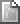
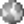

In diesem Kapitel werden Ihnen die Eigenschaften aller Artikeltypen von Plone vorgestellt. Dabei gehen wir zuerst auf die Gemeinsamkeiten ein und widmen uns danach jedem einzelnen Artikeltyp. Tabelle tab_artikeltypen gibt einen Überblick über die verfügbaren Typen und ihre Symbole.
| Symbol | Artikeltyp |
|---|---|
| Seite | |
| Nachricht | |
| Termin | |
|  | Bild |
| Datei | |
| Lesezeichen | |
|  | Link |
| Ordner | |
| Kollektion |